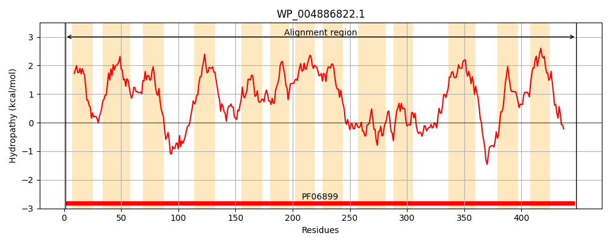
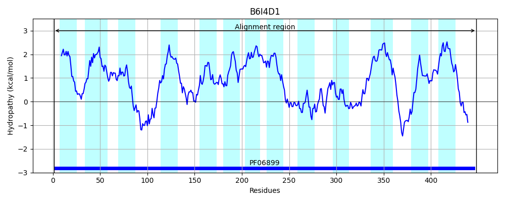
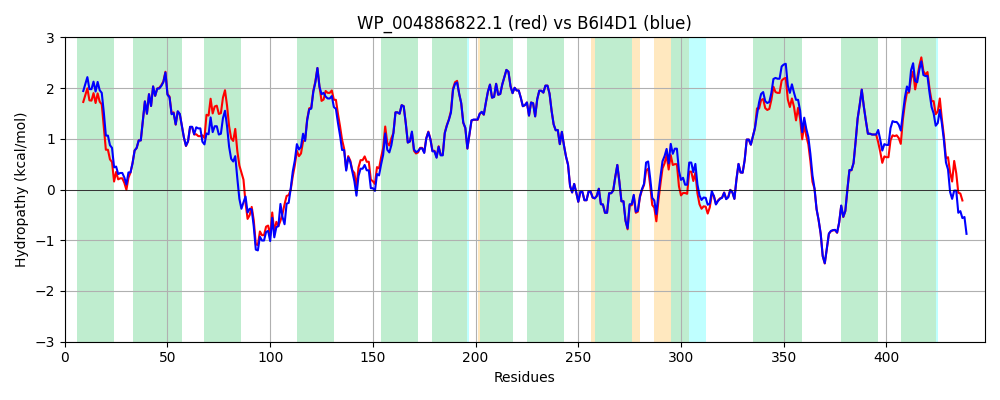

Hit Accession: B6I4D1
Hit TCID: 9.B.128.1.1
Hit Description: gnl|BL_ORD_ID|1966 gnl|TC-DB|B6I4D1|9.B.128.1.1 Putative ECA polymerase OS=Escherichia coli (strain SE11) GN=wzyE PE=3 SV=1
Mach Len: 448
e:0.000000
Query TMS Count : 13
Hit TMS Count: 13
TMS-Overlap Score: 12.300000
Predicted Substrates:None
BLAST Alignment:
Score: 2060 , Bit scores: 798 bits, E-value: 0.0e+00, Alignment length: 448, Percentage identity: 87
Query: 1 MTLMQFSGLLVVWLLSTLFIATATWFEFRRVRFNFNVFFSLLFLLTFFFGFPLTSILVFRFDVSVAPPEILLQTLLIAVCFYAIYYVTYKTRLRPASREVAHRPLFTMNRVETHLAWGILMGLALLCVGIFFAHNGFLLFKLNSYSQIFSAEVSGVALKRFFYFFIPAMLVVYFLRQDYKAWIFFLVSTVAFGLLTYAIVGGTRANIIIAFAIFLFIGIIRGWISLWMLAAAGVLGIVGMFWLALKRYGMNVSGDEAFYTFLYLTRDTFSPWENLALLLQNYDKIDFQGLAPMIRDFYVFIPSWMWHGRPTMVLNTANYFTWEVLNNHSGLAISPTLIGSLVVMGGVWFVPLGAVAVGLIIKWFDWLYELGNRESNRYKAAILHSFCFGAIFNMIVLAREGLDSFGSRVVFFLVIFGICLLAAKLLYWFLDSVGLIHKRVKPLSQPQV 448
M+L+QFSGL VVWLL TLFIAT TWFEFRRVRFNFNVFFSLLFLLTFFFGFPLTS+LVFRFDV VAPPEILLQ LL A CFYA+YYVTYKTRLR +V RPLFTMNRVET+L W ILMG+AL+ VGIFF HNGFLLF+LNSYSQIFS+EVSGVALKRFFYFFIPAMLVVYFLRQD KAW+FFLVSTVAFGLLTY IVGGTRANIIIAFAIFLFIGIIRGWISLWMLAAAGVLGIVGMFWLALKRYGMNVSGDEAFYTFLYLTRDTFSPWENLALLLQNYD IDFQGLAP++RDFYVFIPSW+W GRP+MVLN+ANYFTWEVLNNHSGLAISPTLIGSLVVMGG F+PLGA+ VGLIIKWFDWLYELGNRE+NRYKAAILHSFCFGAIFNMIVLAREGLDSF SRVVFF+V+FG CL+ AKLLYW +S GLIHKR K + QV
Sbjct: 1 MSLLQFSGLFVVWLLCTLFIATLTWFEFRRVRFNFNVFFSLLFLLTFFFGFPLTSVLVFRFDVGVAPPEILLQALLSAGCFYAVYYVTYKTRLRKRVADVPRRPLFTMNRVETNLTWVILMGIALVSVGIFFMHNGFLLFRLNSYSQIFSSEVSGVALKRFFYFFIPAMLVVYFLRQDSKAWLFFLVSTVAFGLLTYMIVGGTRANIIIAFAIFLFIGIIRGWISLWMLAAAGVLGIVGMFWLALKRYGMNVSGDEAFYTFLYLTRDTFSPWENLALLLQNYDNIDFQGLAPIVRDFYVFIPSWLWPGRPSMVLNSANYFTWEVLNNHSGLAISPTLIGSLVVMGGALFIPLGAIVVGLIIKWFDWLYELGNRETNRYKAAILHSFCFGAIFNMIVLAREGLDSFVSRVVFFIVVFGACLMIAKLLYWLFESAGLIHKRTKSSLRTQV 448 | Protein Hydropathy Plots: |
|---|
|  |  |
Pairwise Alignment-Hydropathy Plot:
|
|---|
|  |